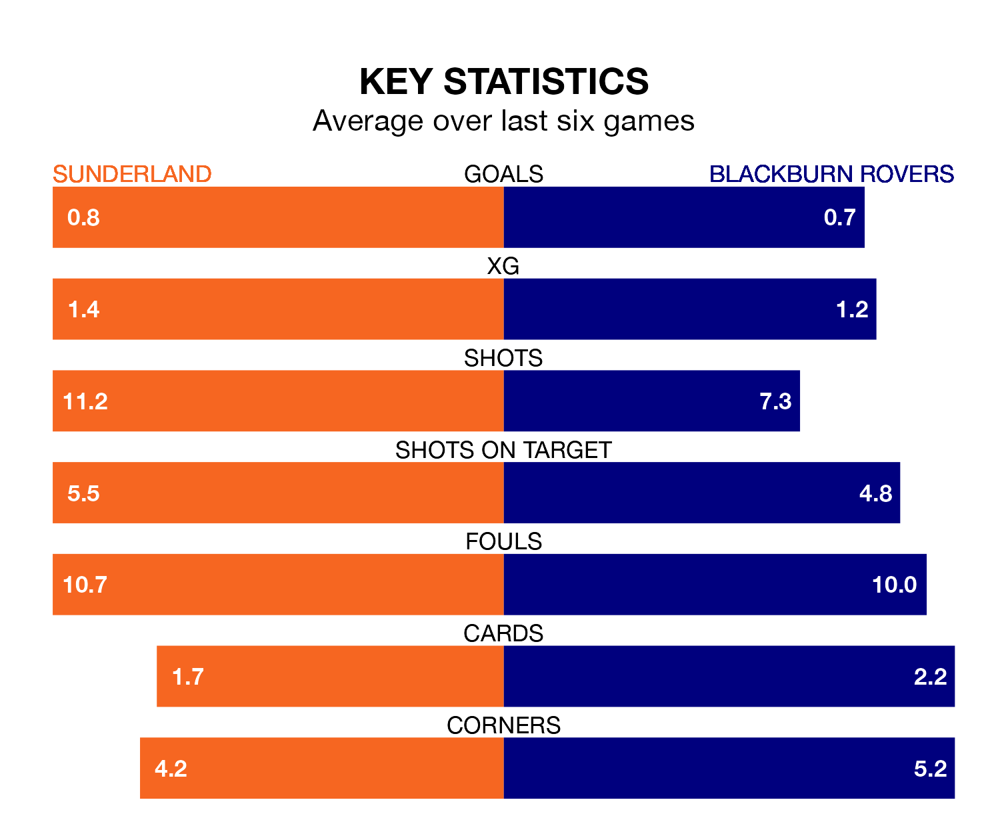

Blackburn Rovers travel to the Stadium of Light looking to secure a first win in 10 EFL Championship games against Sunderland on Monday.
Blackburn have lost three and drawn six matches since they last earned three points – against Stoke City on February 10.
They face a Sunderland side who have won two and drawn one over that time.
In Samuel Szmodics, Blackburn have the league's sharpest shooter so far this season. He has notched 21 goals in 37 appearances.
His goal rate of one every 156 minutes is quicker than that of Jack Clarke, Sunderland's top scorer with a goal every 195 minutes, and a total of 15 goals in 33 games.
Rovers are 19th in the table after 39 games, of which they have won 11 and drawn nine, earning 42 points.
The Black Cats are seven places ahead of the away side in 12th, with 15 wins and six draws putting them on 51 points.
With 50 goals in 39 games so far this season, the hosts are scoring at below the league average rate with 1.3 goals per game. But they are conceding fewer than average too, letting in 45 goals at a rate of 1.2 per game.
Blackburn are also below average scorers, with 1.3 goals per game, compared to a league average of 1.4. They have conceded 1.7 goals per game.
In the last three years, Sunderland and Blackburn have played each other on three occasions. Sunderland won two of them and Blackburn one.
Their last meeting was on September 20, when Sunderland won 3-1 away.
Sunderland's last match was on Friday, a 2-0 win against Cardiff City, with Adil Aouchiche and Jobe Bellingham getting the goals for the Black Cats.
Blackburn lost 1-0 against Ipswich Town last time out, also on Friday.
Monday's match will be refereed by John Busby, who has taken charge of 20 EFL Championship games so far this season, issuing one red card and booking 84 players. He has awarded four penalties.
The last Sunderland game Busby refereed was a 3-1 away win against Blackburn Rovers on September 20. His last Blackburn match was their 3-1 loss at home against Sunderland on September 20.
Updated: 10:31 (UTC), 31/03/24